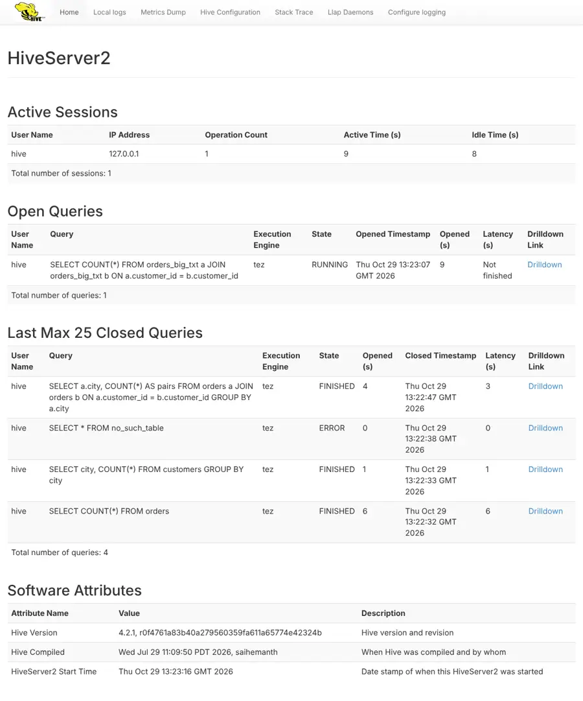

Before you start: troubleshooting queries (8.5), security (10.2) and the metastore (10.1).
Monday, 10 a.m. Three analysts message Riya at once: queries are slow. Lesson 8.5 taught her to read one query’s plan and errors. Now she needs the view from the server: who is connected, what is running, how long things take, and where the logs are.
R> Sir, is there a dashboard for HiveServer2?
A> Every HiveServer2 has a small web UI on port 10002: live sessions and queries, a drilldown per query with timings, a metrics dump, the configuration and a thread dump. Behind it are metrics you can export to monitoring systems, and three kinds of logs: the server log, the per-query operation logs and the Tez task logs.
K> Then we just open it?
A> Open it and you will find, as we did, that metrics are off by default in this build, the plan tab needs a setting, the logs are full of background noise, and the metrics page showed our metastore password to anyone. All outputs and screenshots are real, from Hive 4.2.1.
2 Definition
Monitoring HiveServer2
Formal definition (write this in exams)
Monitoring HiveServer2 combines its built-in web UI (port 10002 by default), which lists active sessions, open and recently closed queries with per-query drilldowns (profile, stages, plan, performance log, operation log) and exposes configuration, thread dumps and JMX metrics; metrics (enabled with hive.server2.metrics.enabled) such as open sessions, submitted, succeeded and failed queries and compilation and execution timers, published through JMX or JSON reporters; and logs: the server log, per-operation logs returned to clients and optionally kept as historic logs, and the execution engine’s task logs, all correlated by the query ID.
In simple words
HiveServer2 has a web page that shows who is connected and what is running, numbers (metrics) that monitoring tools can collect, and logs that explain what happened to each query. Together they tell you whether the server, or one query, is the problem.
Without metrics enabled, /jmx had 27 JVM beans and no hs2_*; with them, 122 beans including session, query and compile timers.
The drilldown’s Performance Logging tab split a 3.9 s query into 0.71 s compile and 3.2 s execution; the Query Plan tab needed hive.server2.webui.explain.output=true.
/conf hid the database password, but /jmx printed it in the JVM arguments, with no login. Operation level VERBOSE sent 253 log lines to Beeline vs 118 at EXECUTION.
/LEVELS
EXAM> “How do you monitor HiveServer2?” Use the HS2 web UI (port 10002) for live sessions and queries with drilldowns, enable metrics (hive.server2.metrics.enabled) and scrape JMX into a monitoring system (open sessions, failed queries, latency), and correlate logs by query ID across the HS2 log, operation logs and Tez/YARN logs. Secure the UI.
3 Types and ways to use it
Monitoring settings (Hive 4.2.1 lab)
Setting
Lab value
Purpose
hive.server2.webui.port
10002
Web UI port (0 disables it)
hive.server2.webui.max.historic.queries
25
Closed queries kept in the UI
hive.server2.webui.explain.output
false
Show EXPLAIN in the Query Plan tab
hive.server2.metrics.enabled
false (we set true)
Publish hs2_* metrics
hive.server2.logging.operation.level
EXECUTION
NONE · EXECUTION · PERFORMANCE · VERBOSE
hive.server2.historic.operation.log.enabled
false (we set true)
Keep operation logs after a query
hive.server2.webui.use.spnego / use.pam / use.ssl
false
Protect the web UI
hive.conf.hidden.list
passwords …
Values hidden from /conf and SET
WARN> The web UI and /jmx have no login unless you enable SPNEGO or PAM, and they reveal queries, users and configuration. In our lab /jmx even showed the metastore password, because it was passed as a -D JVM argument. Restrict port 10002 to administrators, and keep secrets in hive-site.xml or a credential provider, never on the command line.
4 Step by step
A morning with the HiveServer2 web UI, metrics and logs
All outputs are real, from Hive 4.2.1. The lab maps HiveServer2’s port 10002 to the host; screenshots were taken with a headless browser.

Real screenshot: the HiveServer2 web UI of our lab while the 40-second query was running. One session, one open query, four closed ones (three FINISHED, one ERROR).Real screenshot: the Performance Logging tab of a query’s drilldown: metastore calls and every compile phase with its time in milliseconds.
Step 1 · Who is connected, and what is running?
-- while SELECT COUNT(*) FROM orders_big_txt a JOIN orders_big_txt b … was running
Active Sessions
User Name IP Address Operation Count Active Time (s) Idle Time (s)
hive 127.0.0.1 1 17 16
Total number of sessions: 1
Open Queries
User Name Query Execution Engine State Opened Timestamp Opened (s) Latency (s) Drilldown Link
hive SELECT COUNT(*) FROM orders_big_txt a JOIN orders_big_txt b ON a.customer_id = b.customer_id tez RUNNING Thu Oct 29 13:23:07 GMT 2026 16 Not finished Drilldown
Total number of queries: 1
Last Max 25 Closed Queries
User Name Query Execution Engine State Opened (s) Closed Timestamp Latency (s) Drilldown Link
hive SELECT a.city, COUNT(*) AS pairs FROM orders a JOIN orders b ON a.customer_id = b.customer_id GROUP BY a.city tez FINISHED 4 Thu Oct 29 13:22:47 GMT 2026 3 Drilldown
hive SELECT * FROM no_such_table tez ERROR 0 Thu Oct 29 13:22:38 GMT 2026 0 Drilldown
hive SELECT city, COUNT(*) FROM customers GROUP BY city tez FINISHED 1 Thu Oct 29 13:22:33 GMT 2026 1 Drilldown
hive SELECT COUNT(*) FROM orders tez FINISHED 6 Thu Oct 29 13:22:32 GMT 2026 6 Drilldown
Total number of queries: 4
The home page lists active sessions (user, IP, operation count, active and idle time), open queries with state and a drilldown link, and the last 25 closed queries (hive.server2.webui.max.historic.queries) with their final state: FINISHED, ERROR, and later TIMEDOUT for our self-join, which hit a 40-second query timeout. This list lives in memory and is empty after a restart.
Step 2 · Drill into one query
-- SELECT a.city, COUNT(*) AS pairs FROM orders a JOIN orders b ON … GROUP BY a.city
getTableColumnStatistics_(String, String, List, String) 66 ms
getTable_(GetTableRequest) 29 ms
Calcite: Plan generation 59 ms
Calcite: Prejoin ordering transformation 168 ms
compile 710 ms
Physical Optimization 98 ms
parse 2 ms
semanticAnalyze 702 ms
TezCompiler 48 ms
Calcite: Postjoin ordering transformation 191 ms
runTasks 3200 ms
Driver.execute 3201 ms
The 3.9-second query spent 0.71 s compiling (702 ms semantic analysis, of which Calcite join-ordering transformations took about 360 ms) and 3.2 s running tasks. The first rows are metastore calls during compilation (getTable 29 ms, column statistics 66 ms). This tab answers “was it planning or execution?” without reading any log. The Stages tab labelled the Tez stage Stage-1:MAPRED, an old name; the Query Plan tab said “Set configuration hive.server2.webui.explain.output to true to view future query plans”.
Step 3 · Metrics are off until you switch them on
curl -s http://localhost:10002/jmx # default configuration
# restart HiveServer2 with -Dhive.server2.metrics.enabled=true
curl -s http://localhost:10002/jmx # 122 beans now
beans: 27
java.lang:type=Memory HeapMemoryUsage used = 147 MB of max 1024 MB
hs2_* beans: 0
With the defaults of this image, /jmx had only 27 JVM beans (heap 147 MB of 1,024 MB, garbage collection, threads) and no hs2_* metrics. After enabling hive.server2.metrics.enabled it published 122 beans, including HiveServer2’s own counters and timers. Most tutorials show the metric names but not that they may be disabled.
Step 4 · The numbers after a small workload
# workload: 3 successful queries, 1 error (no_such_table), 1 query timed out after 40 s
curl -s http://localhost:10002/jmx | python3 -c '…select hs2_* and api_* beans…'
api_compile count=5 mean= 0.59 s max= 1.58 s
api_hs2_sql_operation_PENDING count=5 mean= 0.00 s max= 0.00 s
cumulative_connection_count count=4
hs2_active_sessions value=0
hs2_completed_sql_operation_ERROR count=1
hs2_completed_sql_operation_FINISHED count=3
hs2_executing_queries count=4 mean= 21.04 s max= 39.98 s
hs2_failed_queries count=1
hs2_open_sessions value=0
hs2_sql_operation_active_user count=0
hs2_submitted_queries count=4 mean= 2.94 s max= 6.13 s
hs2_succeeded_queries count=3
open_operations count=0
waiting_compile_ops count=0
Counters (hs2_succeeded_queries 3, hs2_failed_queries 1, cumulative_connection_count 4), gauges (hs2_open_sessions 0 now) and timers: compilation averaged 0.59 s (max 1.58 s); execution averaged 21 s, pulled up by the 40-second timeout. A monitoring system scrapes these every minute and alerts on trends: rising failures, rising compile time (often a metastore problem), too many open sessions.
Step 5 · Operation logs: what Beeline receives
SET hive.server2.logging.operation.level=NONE; -- then EXECUTION, PERFORMANCE, VERBOSE
SELECT city, COUNT(*) FROM customers GROUP BY city;
operation.level=NONE log lines sent to Beeline: 0
operation.level=EXECUTION log lines sent to Beeline: 118
operation.level=PERFORMANCE log lines sent to Beeline: 118
operation.level=VERBOSE log lines sent to Beeline: 253
The INFO lines you see in Beeline (Lesson 8.4’s Tez summary, counters, Lesson 8.5’s errors) are the operation log. NONE sends nothing; EXECUTION is the default; VERBOSE doubled the volume to 253 lines. PERFORMANCE gave the same 118 lines as EXECUTION for this query. With hive.server2.historic.operation.log.enabled=true the server keeps a copy after the query ends.
Step 6 · Follow one query through the server log
docker logs hiveserver2 | grep 'hive_20261029132307_55f4dbc1-…' # in our Docker lab: stdout
# the kept (historic) operation log of the same query, last lines:
tail -2 /tmp/hive/operation_logs_historic/…/hive_20261029132307_55f4dbc1-…
13:23:07 INFO [Thread-321] ql.Driver: Compiling command(queryId=hive_20261029132307_55f4dbc1-e79b-48bd-8757-20647193bf39): SELECT COUNT(*) FROM orders_big_txt a JOIN orde
13:23:07 INFO [Thread-321] ql.Driver: Completed compiling command(queryId=hive_20261029132307_55f4dbc1-e79b-48bd-8757-20647193bf39); Time taken: 0.466 seconds
13:23:07 INFO [Thread-323] ql.Driver: Executing command(queryId=hive_20261029132307_55f4dbc1-e79b-48bd-8757-20647193bf39): SELECT COUNT(*) FROM orders_big_txt a JOIN orde
13:23:08 INFO [Thread-323] client.TezClient: Submitting dag to TezSession, sessionName=HIVE-325849df-6e49-44c6-9007-d54eb060e669, applicationId=application_1793280187938_
13:23:08 INFO [Thread-323] tez.TezTask: HS2 Host: [4b97215477de], Query ID: [hive_20261029132307_55f4dbc1-e79b-48bd-8757-20647193bf39], Dag ID: [dag_1793280187938_0001_1]
13:23:47 INFO [Thread-323] ql.Driver: Executing command(queryId=hive_20261029132307_55f4dbc1-e79b-48bd-8757-20647193bf39) has been interrupted after 39.983 seconds
ERROR : FAILED: Operation cancelled
INFO : Executing command(queryId=hive_20261029132307_55f4dbc1-e79b-48bd-8757-20647193bf39) has been interrupted after 39.983 seconds
The query ID ties everything together: compile (0.466 s), execute, the Tez DAG and application ID, and the end, “interrupted after 39.983 seconds” (our query timeout). The historic operation log on disk ends with “FAILED: Operation cancelled”. In this Docker image the server log goes to the console (the UI’s Local logs page returned 404); on clusters it is a file such as /var/log/hive/hiveserver2.log.
total log lines: 4585 · compactor.Worker lines: 21 · lines with this queryId: 32
In a few minutes the server log had 4,585 lines, including a compaction worker announcing every ~11 seconds that it had nothing to do (Module 7’s compactor running inside HiveServer2). Only 32 lines belonged to the query we cared about. Search by query ID or session ID, ship logs to a central system (ELK, Splunk, Loki), and tune noisy loggers through the UI’s Configure logging page or log4j2.
-- /conf page: is the metastore password shown?
occurrences of the real password: 0
hive.conf.hidden.list=javax.jdo.option.ConnectionPassword,hive.server2.keystore.password,hive.server2.webui.keystore.password,hive.druid.metadata.password,fs.s3 …
$ curl -s http://localhost:10002/jmx # no login needed
bean java.lang:type=Runtime, InputArguments ( 35 items), matching *Password*:
-Djavax.jdo.option.ConnectionPassword=hivepw
The configuration page correctly hides the metastore password (hive.conf.hidden.list). But the metastore password reached HiveServer2 as a -D JVM argument, and /jmx lists all JVM arguments: anyone who can open port 10002 can read it. Fix: keep secrets in hive-site.xml or a Hadoop credential provider (hadoop.security.credential.provider.path), enable SPNEGO/PAM and TLS on the UI, and firewall the port.
5 See it happen
Now, trends and details
Left: real outputs. Right: what each monitoring layer tells you.
Now, trends and details 5 steps
What you see
The home page showed a running query and recent ones.
The drilldown split a query into compile and run time.
Metrics appeared only after enabling them.
One query ID found 32 relevant lines among thousands.
/jmx exposed a password that /conf hid.
Behind the screen
HiveServer2 keeps live and recent operations in memory.
The perf logger times every phase of each query.
Metric reporters publish counters and timers through JMX.
Every log line of a query carries its ID.
JMX lists JVM arguments verbatim.
Three live scenarios follow: server triage, a metrics dashboard, and locking down the UI.
Real-time scenario 1
Is it the server or one user?
A typical triage with the web UI. (Numbers illustrative; pages as in our lab.)
Server triage 5 steps
Animated example
Users report slowness.
Open Queries reveals a runaway job.
Drilldown shows where time goes.
Kill and inform.
Alert next time.
Real-time scenario 2
A monitoring dashboard for Hive
Turning metrics into dashboards and alerts. (Typical setup; metric names from our lab.)
Metrics pipeline 5 steps
Animated example
The team needs a dashboard.
Enable metrics and scrape JMX.
Chart the key series.
Alert on real problems.
Include the metastore.
Real-time scenario 3 · advanced
Locking down the web UI
Remediating the exposure we found. (Typical hardening steps.)
UI hardening 5 steps
Animated example
The UI is open to everyone.
Move secrets out of -D flags.
Require authentication and TLS.
Restrict network access.
Test again from outside.
6 Real-world use
Monitoring at work
1. On-call triage
The web UI’s open queries and drilldowns are the first stop when users report slowness.
Complaint→web UI→Cause
2. Service levels
Query success rate and latency percentiles from metrics are reported against agreed service levels.
Metrics→dashboard→SLO report
3. Capacity planning
Trends in sessions, concurrent queries and heap use show when to add HiveServer2 instances.
Trends→forecast→More servers
4. Central log search
HiveServer2, metastore and Tez logs are shipped to ELK, Splunk or Loki and searched by query ID.
Logs→search→Root cause
5. Security reviews
Monitoring endpoints are checked in security scans, since they reveal queries, users and configuration.